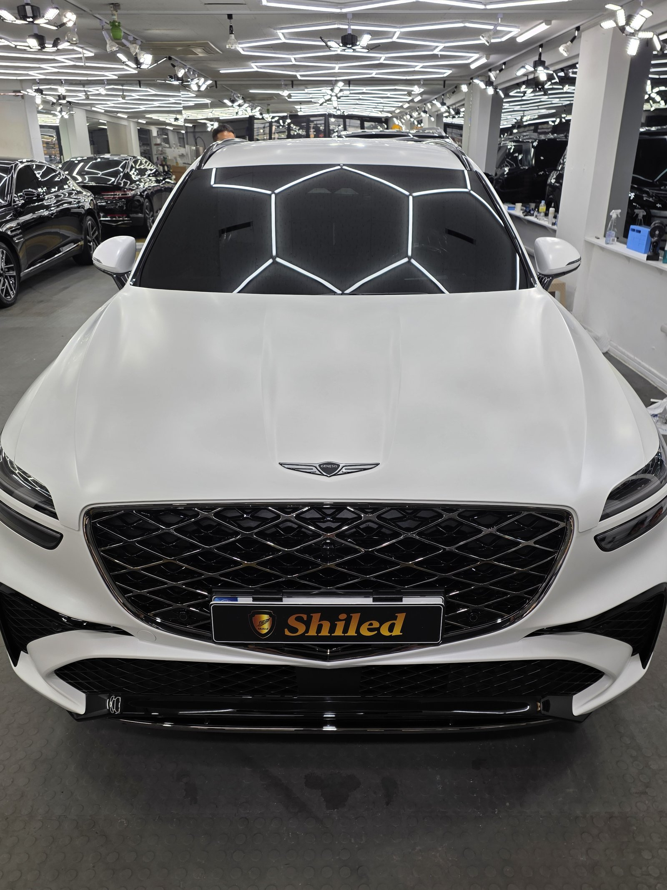
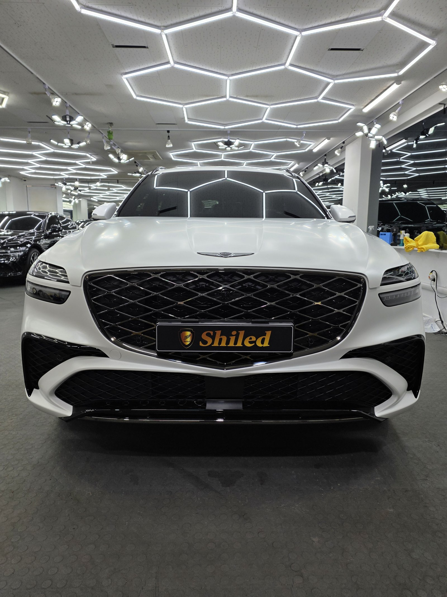
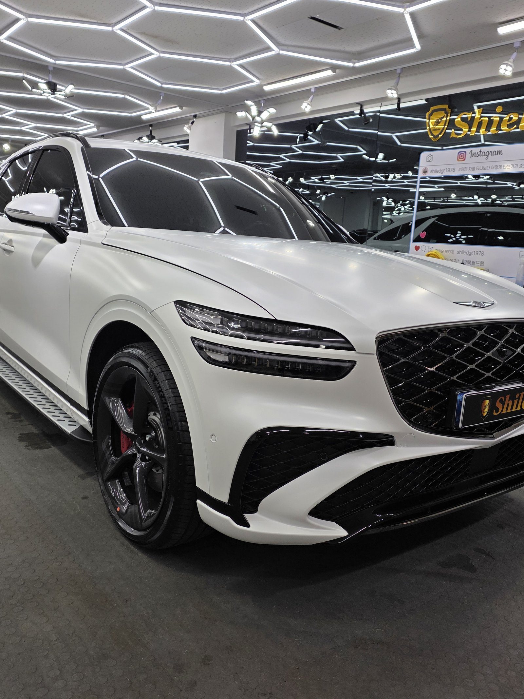
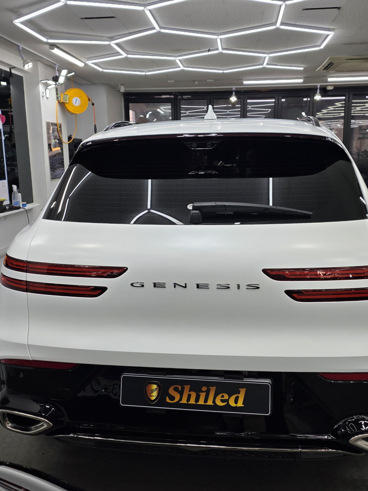
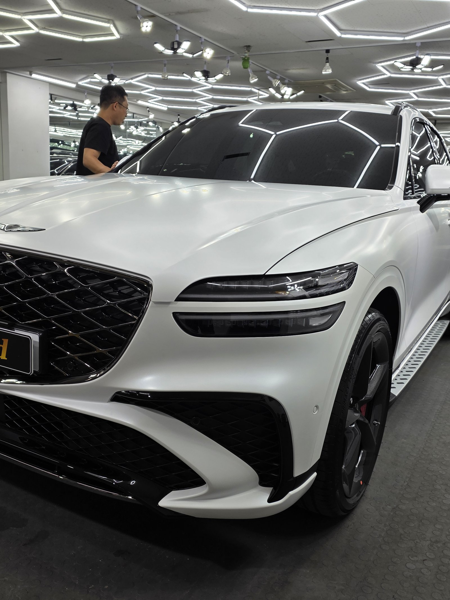
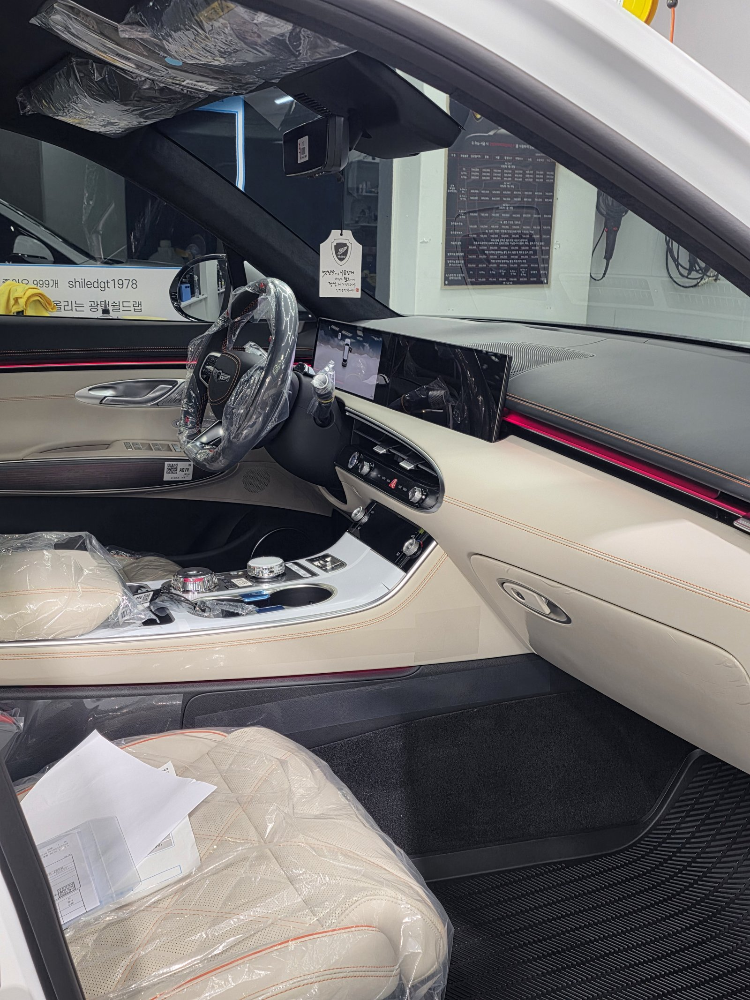
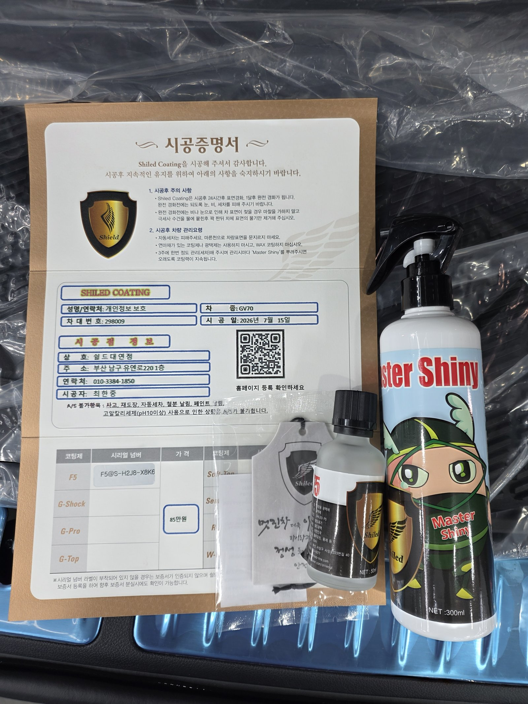

제네시스 GV70 무광백색입니다. 출고 전 신차입니다.
무광 도장이라 코팅을 망설이는 분들이 많은데, 이 차는 무광 질감을 그대로 살리는 F5로 진행했습니다.

무광 도장, 코팅해도 되나
됩니다. 단, 아무 코팅제나 쓰면 안 됩니다.
광택 성분이 든 제품을 올리면 무광 특유의 질감이 유광으로 바뀌어버립니다. F5는 표면 결을 눌러 뭉개지 않으면서 오염과 스크래치 저항성만 더하는 코팅이라, 무광 도장의 질감을 그대로 지킬 수 있습니다. 코팅제는 대표가 화학공학 전공으로 직접 개발·제조한 제품입니다.

새 차인데 왜 출고 전에 코팅을 하나
도장면이 가장 깨끗할 때 올리는 코팅이 가장 오래갑니다.
출고 후에는 운행과 세차로 미세한 잔기스와 오염이 쌓이기 시작합니다. 그게 쌓이기 전, 신차 상태 그대로일 때 코팅막을 입혀두는 겁니다. 그래서 쉴드광택은 출고 전 신차 시공을 맡아 진행합니다.

기술자의 팁
무광 차량은 코팅 후 관리법도 다릅니다. 광택 성분이 든 세차용품이나 왁스를 쓰면 질감이 변해버립니다. 시공 후 무광 전용 관리 방법을 별도로 안내해 드립니다.


외부만이 아니라 안까지
출고 전 차량은 안팎 컨디션을 함께 정리합니다.
실내는 크림톤 가죽 시트가 신차 그대로의 상태입니다. 외부 도장은 F5로 무광 질감을 지키며 오염 저항성을 더했고, 인도까지 깨끗한 상태로 관리합니다.

시공증명서를 함께 드립니다
모든 시공 차량에 시공증명서를 드립니다.
차종·시공일·코팅제 시리얼 번호가 적혀 있고, 홈페이지에 등록해 보증을 받으실 수 있습니다. 이 차는 F5 코팅으로 기록돼 있습니다.

차종·시공일·코팅제 시리얼이 기재된 시공증명서
자주 묻는 질문
Q. 무광 도장에도 유리막코팅을 할 수 있나요?
A. 가능합니다. 다만 광택 성분이 아니라 무광 질감을 그대로 살리는 코팅제를 써야 합니다. 이 차는 F5로 진행했는데, 무광 표면의 결을 눌러 뭉개지 않으면서 오염과 스크래치 저항성만 더했습니다.
Q. 새 차인데 왜 출고 전에 코팅을 하나요?
A. 도장면이 가장 깨끗할 때 올리는 코팅이 가장 오래갑니다. 운행·세차로 잔기스와 오염이 쌓이기 전, 신차 상태 그대로일 때 코팅막을 입혀두면 처음 컨디션을 더 오래 지킵니다.
Q. 무광 차량은 세차할 때 뭘 조심해야 하나요?
A. 광택 성분이 든 세차용품이나 왁스는 피해야 합니다. 무광 특유의 질감을 유광으로 바꿔버릴 수 있습니다. 코팅 후에도 무광 전용 관리법을 안내해 드립니다.
Q. 쉴드광택 위치와 예약은 어떻게 하나요?
A. 부산 남구 유엔로220 1F 쉴드광택입니다. 예약·상담은 010-3384-1850, 대표 최한중이 직접 상담하고 책임 시공합니다.
무광이든 유광이든, 새 차일수록 시작점이 다릅니다.
제품을 직접 만드는 사람이 직접 시공합니다.
부산에서 신차코팅을 고민 중이시면 편하게 연락 주십시오.
어떤 차를 타냐보다 어떻게 타냐가 중요합니다~!
시공 중에는 전화를 받지 못할 때가 많습니다.
카카오톡으로 차종과 원하시는 시공을 남겨주시면 확인 후 답변드립니다.
쉴드광택 · 부산 남구 유엔로220 1F · 대표 최한중